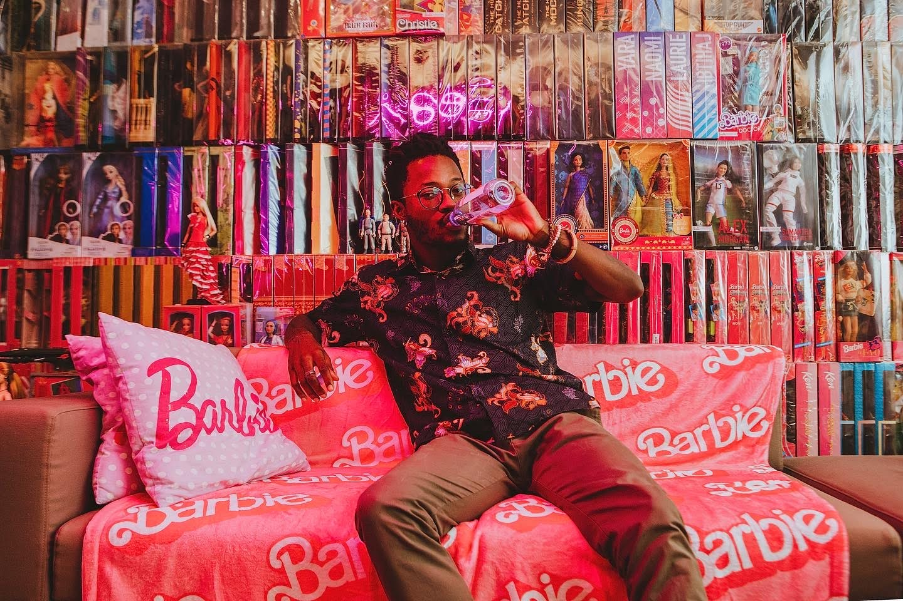
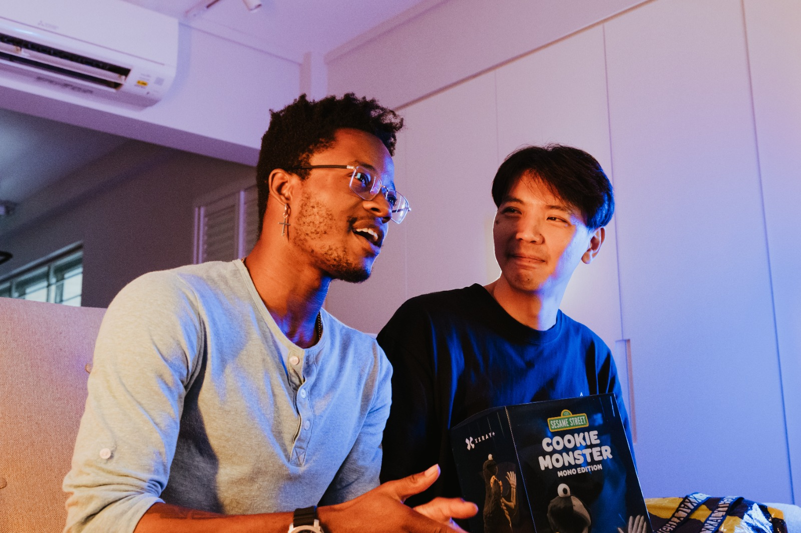
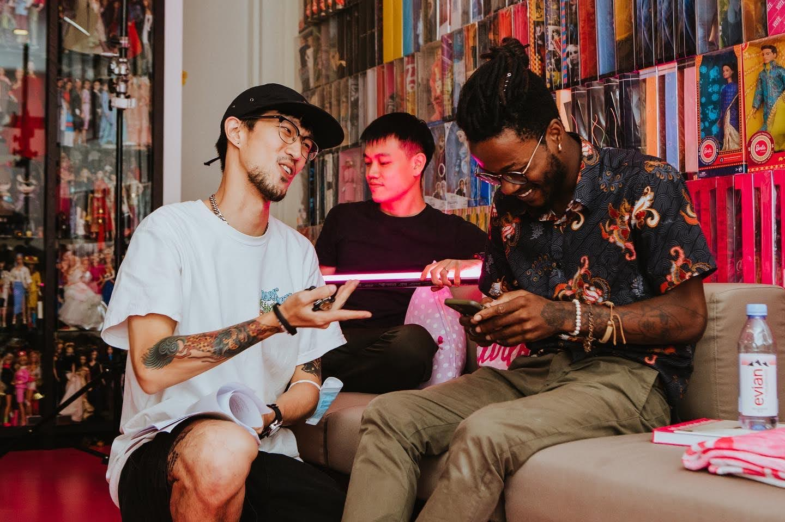

MightyJaxx · Singapore · 2024
FLEXX
Fronting a documentary series that decoded Singapore’s designer-toy subculture for the audience outside it — without losing the audience inside it.

The Insight
Subcultures die on camera when brands explain them from the outside.
Singapore’s designer-toy and collectibles scene runs on identity — the grail hunts, the trades, the shelves that double as autobiographies. A brand-made series about it would only work if the collectors carried the story themselves, and the host’s job was to open doors, not translate through a marketing filter.
The Idea
Surface the culture through its own voices — a documentary lens, not an ad with interviews.
FLEXX treated collectors as protagonists, not props. The series decoded the scene for newcomers while staying accurate enough that the community would share it — the hardest audience being the one on screen.
“The test wasn’t whether outsiders understood it. It was whether insiders reposted it.”
The Execution
- Fronted the documentary-style series across the season
- Surfaced authentic collector stories through on-camera interviews and genuine community engagement
- Translated niche community identity into digital content true to MightyJaxx’s creative brand


The Result
A brand series the subculture itself could stand behind.
FLEXX gave MightyJaxx a storytelling asset rooted in its own community — content that worked as both culture and marketing. Watch the series on YouTube ↗